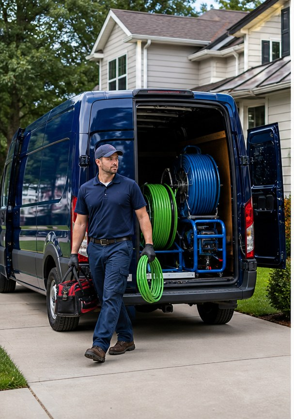

Easley plumbing service
Plumbing help made clear when the next call matters.
Plumbing repair, Sewer service, Drain clearing, Leak repair, Fixture installation, Service calls for Easley, SC customers.
- 4.914 Google reviews
- PlumbingEasley, SC
- EasyTap-to-call scheduling

Services
Clear service options for real customers.
- Plumbing repair
- Sewer service
- Drain clearing
- Leak repair
- Fixture installation
- Service calls

Built for urgent calls
Plumbing customers search with urgency and need a phone number they can trust immediately.
Furman Brezeale Plumbing and Sewer can lead with its 4.9-star reputation while giving customers a clear path to review services and call for scheduling.

Drain urgency check
Choose the drain issue.
Slow drains are best handled before they turn into a backup. A camera inspection can find the real cause.
Service proof
Furman Brezeale Plumbing and Sewer gives Easley customers review proof before they call.
- 4.9-star Google rating
- 14 public reviews
- 521 Kay Dr, Easley, SC
Contact
Furman Brezeale Plumbing and Sewer
521 Kay Dr, Easley, SC